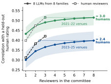
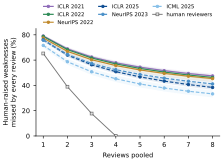
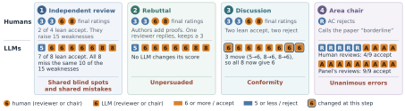

Second Opinions or Echoes? Measuring
Shared Errors Across
LLM Peer Review Stages
1 Georgia Institute of Technology2 Handshake AI3 University of Washington
4 University of Texas Health Science Center at Houston* Equal contribution
LLM reviewers from different model families make the same mistakes, and rebuttal, discussion, and the area chair do not correct them.

Finding 1
Eight LLMs score papers only as well as 2.4–3.0 human reviewers
Even pooled, they miss 33–47% of human-raised weaknesses, and their scoring errors are two to four times as correlated as human reviewers'.


Finding 2
Later stages move the reviewers together, and the shared errors persist
Rebuttal
Ratings change, but agreement with human ratings does not improve.
Discussion
Reviewers converge, and their errors become more correlated.
Area chair
All nine LLM chairs make the same wrong decision on 11% of papers, mostly false accepts.

Finding 3
Six remedies, no fix
We test six remedies, from diversifying models and highlighting missed weaknesses to restricting discussion and showing chairs the human reviews. None restores independent judgment while improving panel scoring.

Use LLM reviews to surface concerns; keep scoring and decisions with humans.
Data and code
Review traces from every stage, the code that runs the panels and reproduces the analyses, and human annotations of the weaknesses LLM reviews miss.
Dataset on Hugging Face Code on GitHub
Data: CC BY 4.0. Code: MIT License.
Citation
@misc{wei2026secondopinions,
title = {Second Opinions or Echoes? Measuring Shared Errors Across LLM Peer Review Stages},
author = {Wei, Yuxiang and Ruan, Sherry and Jiang, Liwei and Lan, Qizhen and Mueller, Jonas},
year = {2026}
}